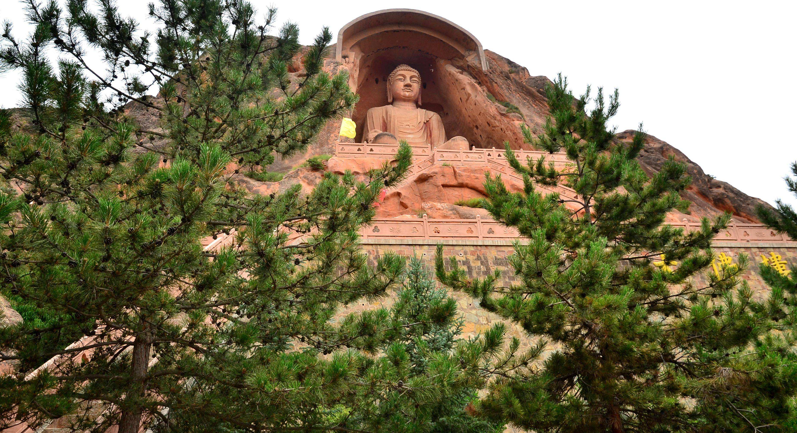
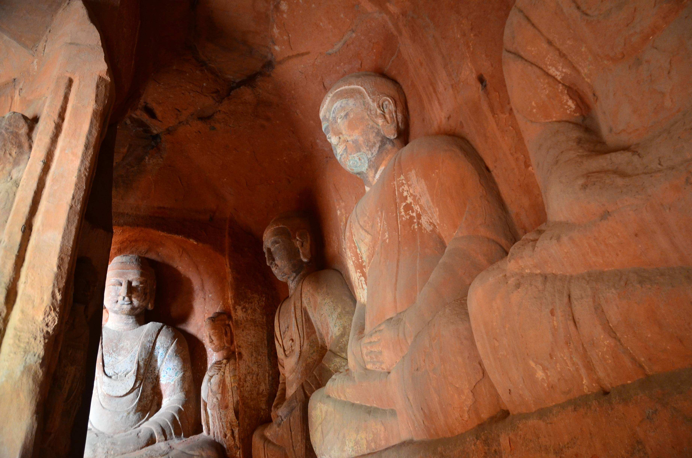
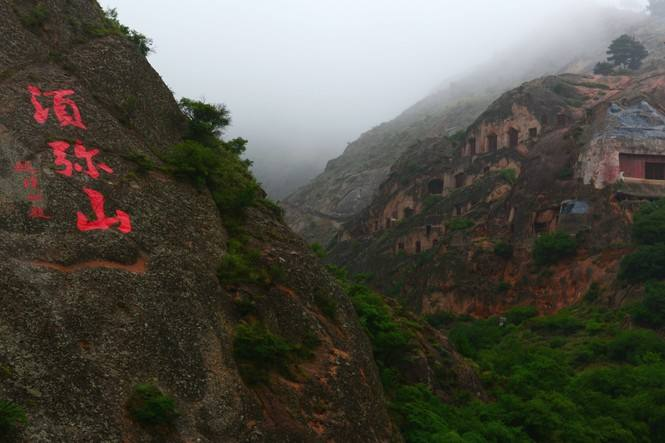

宁夏风光 NING XIA FENG GUANG 欢迎光临我的网站！ |
| 首页 | 塞上新景 | 沙湖苇舟 | 神秘西夏 | 沙坡鸣钟 | 须弥松涛 | 西部影城 |
本站只为介绍宁夏的美丽风光而创建，部分内容采集自互联网，版权归原作者所有
作者联系方式 E-mail: QQ:
|
||||||||||
|
||||||||||
|  | 在宁夏固原市须弥山南麓，有一百多处石窟，总称“须弥山石窟”，最为引人注目的，是须弥山入口处高达20.6米的弥勒大座佛。它高坐于唐代大中三年（849年）开凿的一 个马蹄形石窟内，身披袈裟，头流螺髻；脸如满月，双耳垂肩，神情庄重，十分壮观。这座大佛比云岗石窟中最大的十九窟坐佛还高，是全国最大的造像之一。走近观察，只见那佛高大魁梧，足有五六层楼高，耳朵有两人高，眼窝直径1米多，佛虽大，但雕刻却十分的精致。专家说，这完全是一块完整的罕见巨石雕琢出来的，充分显示了中国古代工匠的高超技艺和雄武则天曾下令全国各州建大佛寺，造大佛像。有学者推测，这等大佛可能是在武则天掀起的崇拜佛的浪潮中建造的。站在大佛的脚下，眼前似有云雾缭绕，耳大西北黄土高原上独特的山水画。 | |||||||||
|  | 在须弥山现存的石窟中，题刻和墨迹虽然数量不算太多、但却是唐“大中三年吕中万”，宋“绍圣四年三月二十二日收复陇干姚雄记”、“崇宁癸未”、西夏“奢单都四年”、金“大定二十一年”等，各个时期的题记和碑刻。这些碑刻、题记，不仅能使我们对石窟的历史有更多的了解、还为今人研究唐、宋、金、西夏各代佛教传播，提供了十分珍贵的资料。 | |||||||||
|  | 须弥山旧名逢义山。明代，须弥山不仅在佛教界闻名遐迩，作为一处风景名胜,也吸引着四方游人。这里自然风光优美，每当春天，桃花盛开，石窟掩映其间，楼阁依山而建，流水潺潺。山上苍松翠柏，四季常绿，凉风吹来，涛声四起。因松涛之声为山中石窟群增色，遂以“须弥松涛”为其景观名。清代皋兰人李毓骧作《须弥松涛》，描述了游人拜佛游山、香火极盛的情景和其胜景。 | |||||||||
| 网站制作：马宁 本站只为介绍宁夏的美丽风光而创建，部分内容采集自互联网，版权归原作者所有 作者联系方式 E-mail: QQ: |
||||||||||